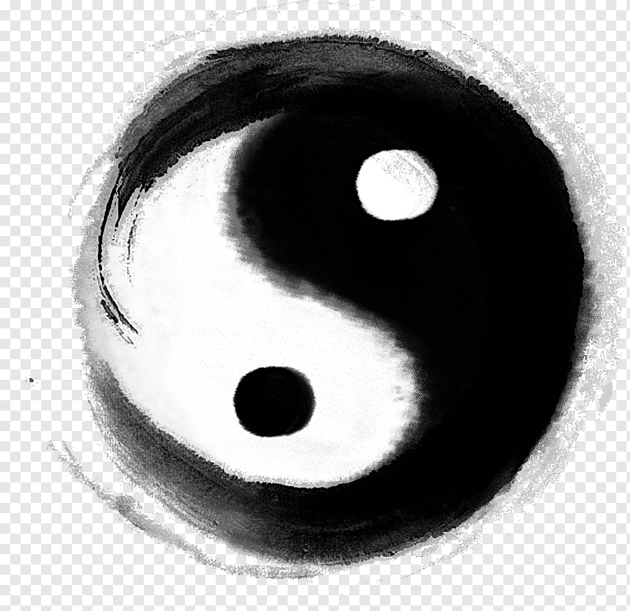

五骨经筋·智能问诊台
▶ 主诉部位 (核心病症)
腰部剧痛 / 起坐困难 (腰脊痛)
肩部疼痛 / 手臂受限 (肩周炎)
慢性头痛 / 眩晕 / 失眠
膝关节痛 / 腿部发沉 / 脚踝崴伤
心悸胸闷 / 气短 / 心绞痛
坐骨神经痛 / 臀部寒凉
▶ 触诊筋脉手感 (五骨取点)
僵硬板结 (瘀堵/劳损)
绵软隆起/胶质状 (毒火伤筋)
空虚塌陷 (气血不足)
触摸到如头发丝细筋 (毫筋发炎)
▶ 患者精神情志状态 (心像)
情绪相对平稳 / 配合度高
曾受惊吓 / 神经紧绷 / 胆小多疑
强势不服输 / 易怒 / 爱生闷气
郁郁寡欢 / 思虑过度 / 孤僻
▶ 饮食与作息规律
暴饮暴食 / 熬夜 / 久坐不动
作息规律 / 饮食节制
生成专属外经调理方案
辩证施治结果
一、 寻筋溯源 (病因剖析)
二、 五骨触诊定点 (经脉走向)
三、 揉术理疗方案 (手法)
四、 心法与引导 (话聊疏导)
五、 功法与保养 (导引自愈)